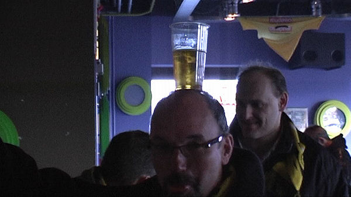

De wedstrijd stond voor een belangrijk deel in het teken van het afscheid
van Gerrie Senden...

... en van VVV ???
Beersjleper Pé.
Het Aevitae-doek over Oost.
Mooie sfeeracties in het gastenvak.
Tegelijkertijd slingers op zuid en west.
Mijnstreek Oost; de mijnen zwijgen, de koempels hijgen. Old soldiers never
die!
In plaats van een minuut stilte wordt het Limburgs volkslied gezongen voor
de recent overleden
Jeu Sprengers.
Liebe Grüsse an die zwei Brüder...auf Wiedersehen....
Het gelijk van Wilders.... de burka inmiddels op Z16.....
Het publiek ziet een matige eerste twintig minuten.
Een lange pass van Jungschläger bereikt Soltani die 0-1 binnen tikt, (21') .
Dit was de wedstrijd van de spandoeken. Hier wordt Van Boekel "bedankt".
Verdellen haalt Van Tornhout naar de grond binnen de beruchte lijnen:
penalty!
Meeuwis schiet hem er zoals gebruikelijk in; Begois duikt naar de verkeerde
hoek: 1-1, (36').
Van Tornhout brengt Lamah in stelling, randje buitenspel: 2-1, (50').
Veel vreemde vogels in de vakken. Kaartenactie soms???
Bodor scoort uit een vrije trap: 3-1, (53').
Een voorzet van Sonkaya wordt door Hadouir in het dak geschoten: 4-1, (78').
VVV komt er niet meer aan te pas en Roda verzuimt de score verder op te
voeren. Hoogtepunt is een
wissel van Sonkaya voor Senden die even later weer een publiekswissel kreeg.
Daarbij werd hij door
grappenmaker Kah van het veld gedragen.
Hier jut Kah het publiek op bij de "HUMBA".

Rugnummers "2" gaan over de tribune.
Er wordt een afscheidswedstrijd gespeeld voor Gerrie Senden. Hij speelt met
het succeselftal van het
seizoen ‘94/’95 (dat de tweede plaats in de eredivisie bereikte) tegen een
All Star-team met onder meer
Johan de Kock, Ronald Waterreus, Tijani Babangida, Eric van der Luer, Bob
Peeters, René Trost en
Max Huijberts. terwijl Joost Meys een op Senden aangepaste tekst van Tante
Ali zingt, leidt Babangida
de polonaise.
Alle spelers dragen rugnummer 2.

Ger neemt afscheid van zijn fans.
Vreugde in Helje-dörp want de play-offs zijn bereikt.
Koffieboer, (getooid met Senden-sjaal), doet een kunstje.

En nog een artiest....
Omdat er geen enkele speler komt opdagen besluit een groep supporters
verhaal te gaan halen bij de
directie.
En nog een artiest....
Het feestje van Senden is in volle gang maar als niet-genodigden stromen de
V-tjes van alle kanten toe.
De "V" van beveiliging...
Marc Luijpers en Huub Narinx nemen de kritiek ter harte.
Als Ger Senden ook nog even een praatje komt maken is de vrede gauw
getekend. (foto: KB)
Regillio Vrede.

Den blije Bob.
Langzaam druppelen de oud-spelers van Roda JC naar buiten zoals hier Ioannis
Anastasiou.
Video's medio deze week.